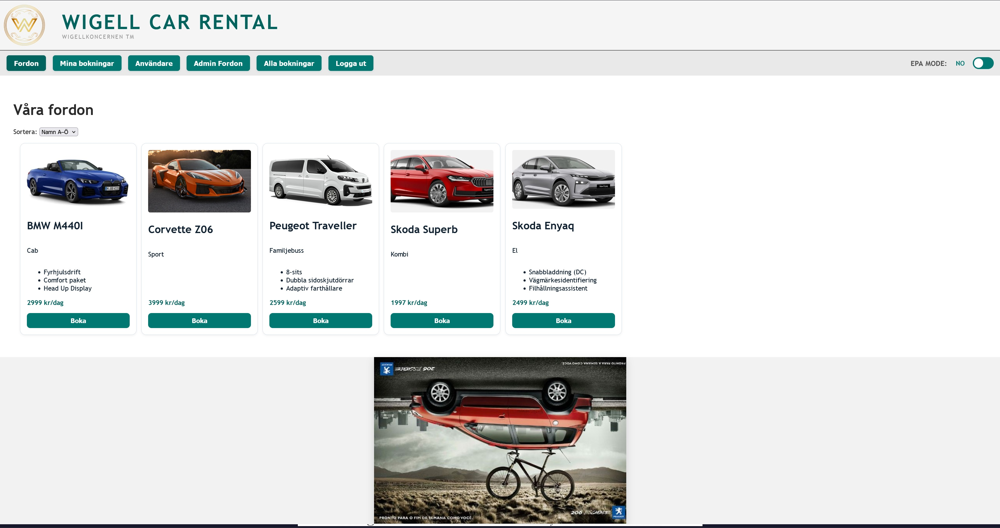
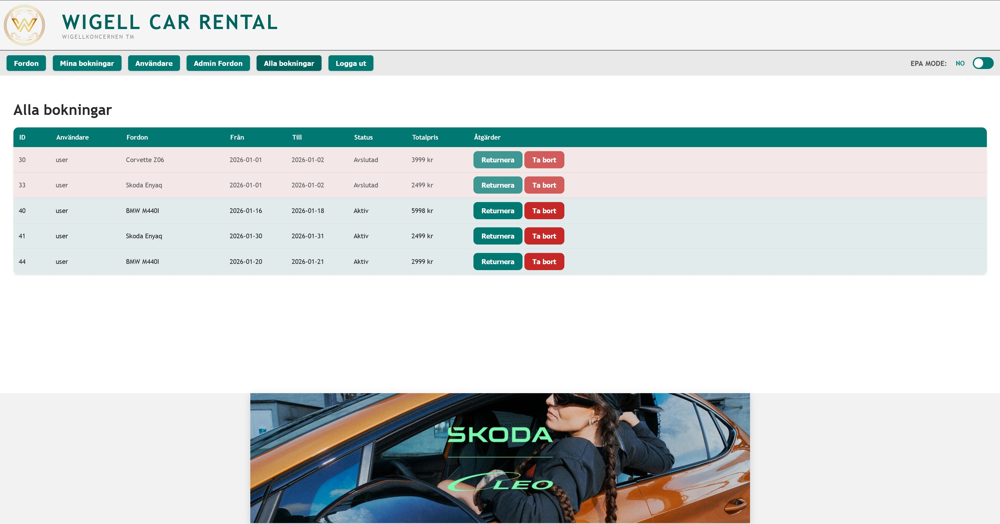
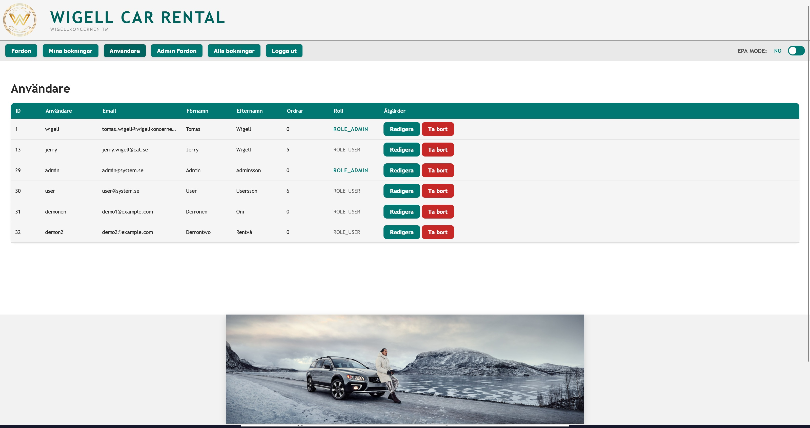
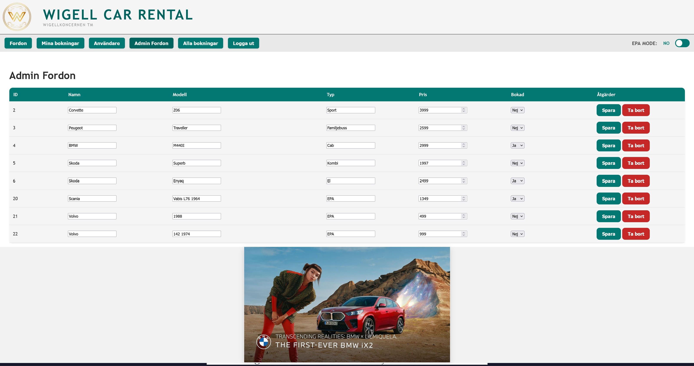
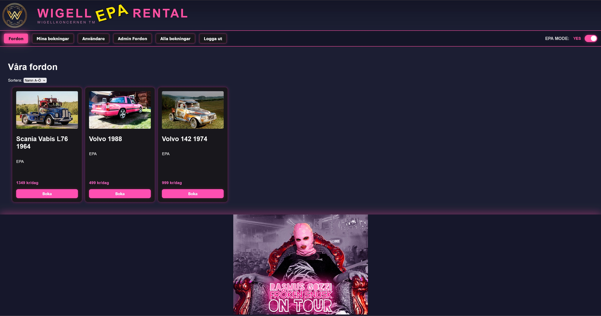
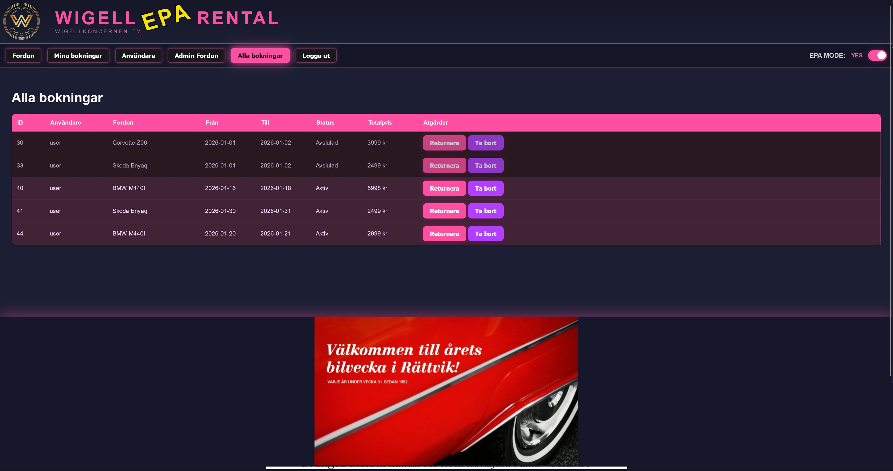
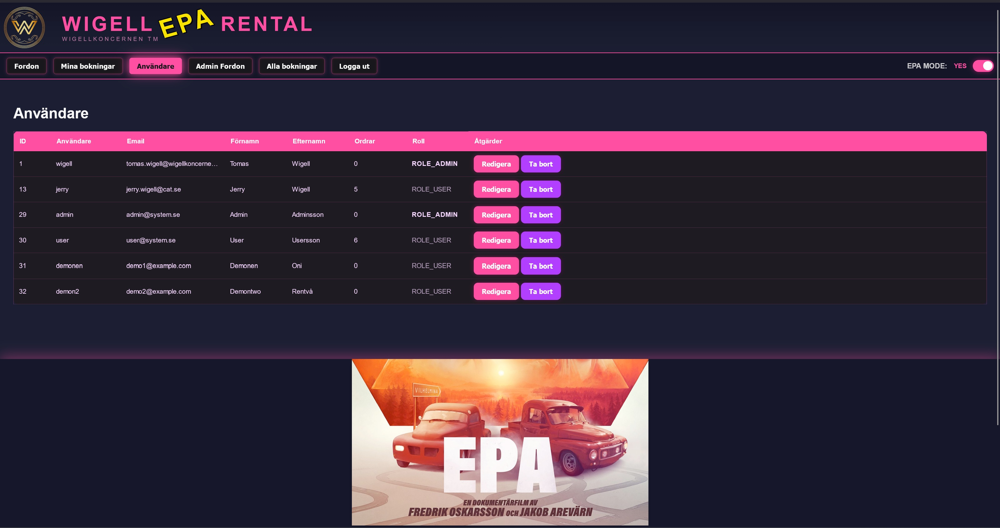
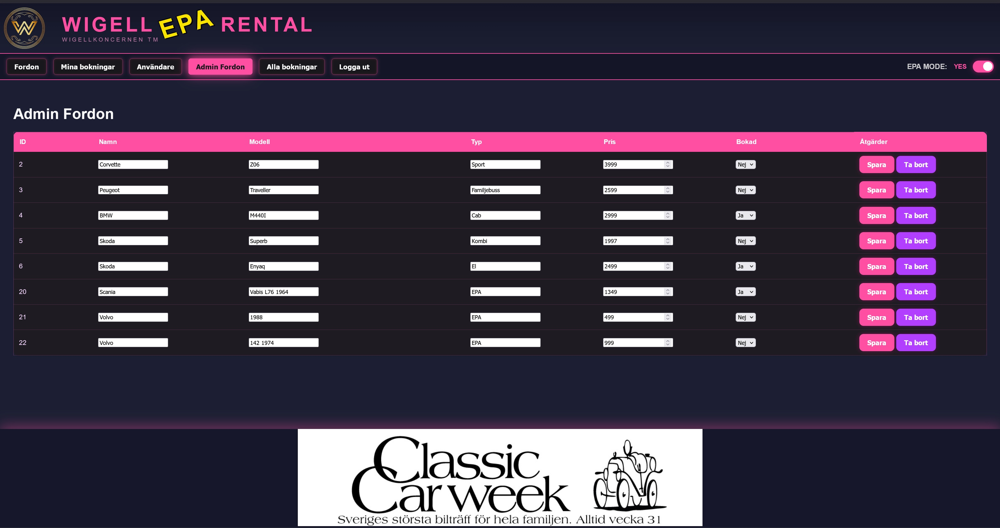

Fordonsöversikt
Användaren kan se tillgängliga fordon och välja ett fordon för bokning.
Ett system för biluthyrning där användare kan utforska fordon och hantera bokningar. Projektet innehåller även administration av fordon och användare samt ett alternativt EPA-läge med eget visuellt tema.
Wigell Car Rental är en webbapplikation för hantering av biluthyrning. Applikationen innehåller funktioner för att visa fordon, skapa och hantera bokningar samt administrera fordon och användare.
Projektet kombinerar ett frontendgränssnitt med en backend som hanterar affärslogik, användare, roller, fordon och bokningar. Gränssnittet är uppdelat i vyer som gör det enklare att hitta och hantera den information som behövs.
Användaren kan se tillgängliga fordon och välja ett fordon för bokning.
Bokningar visas med information om fordon, datum, status och totalpris.
Administratören kan hantera användare och deras roller i systemet.
Administratören kan lägga till, redigera och ta bort fordon samt uppdatera fordonsinformation och pris.
Gränssnitt och funktioner anpassas efter användarroll, så att administration hålls separat.
Ett alternativt läge har eget visuellt tema och separata vyer för fordon, bokningar och användare.
Projektet använder Java och Spring Boot för backendfunktionalitet och API:er. Frontendgränssnittet är byggt med HTML, CSS och JavaScript. Databasen används för att lagra information som hör till fordon, användare och bokningar.
Några vyer från Wigell Car Rental och projektets alternativa EPA-läge.








I projektet arbetade jag med gränssnitt för fordon, bokningar och administration. Jag fick erfarenhet av att strukturera vyer, presentera data tydligt och koppla användarflöden till systemets funktioner.
Arbetet gav mig praktisk erfarenhet av att utveckla funktioner i ett system med flera användarroller och olika vyer för vanliga användare och administratörer.